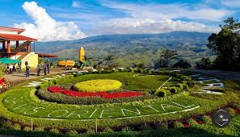
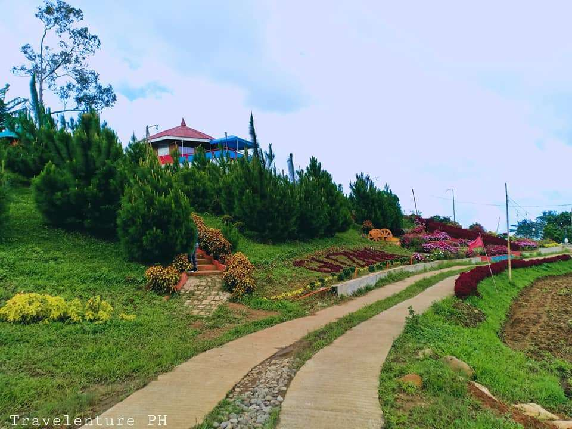
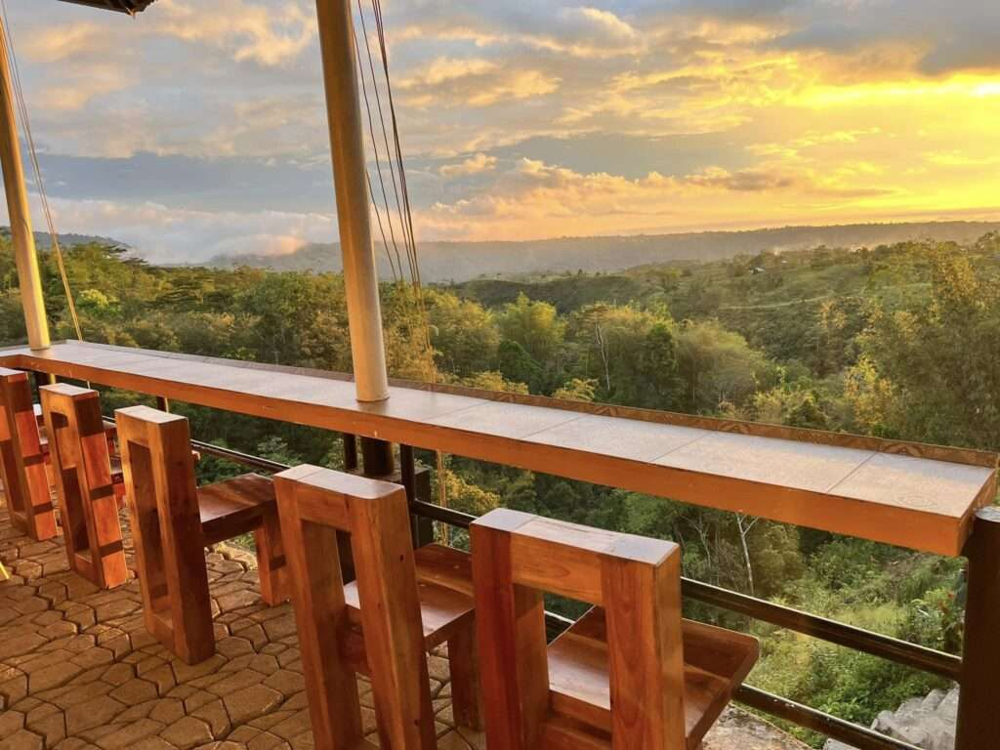
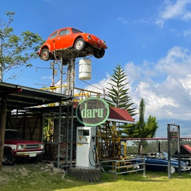
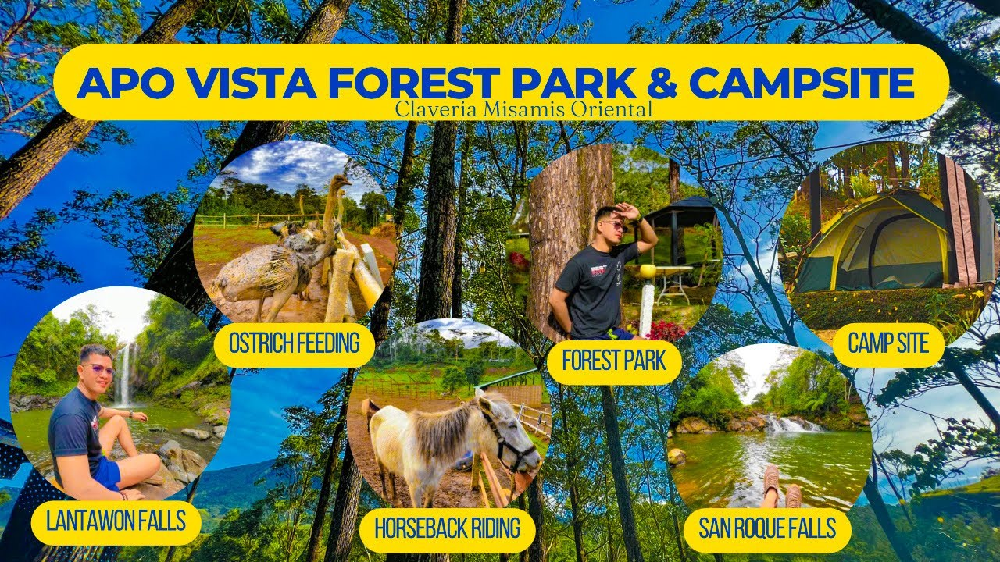
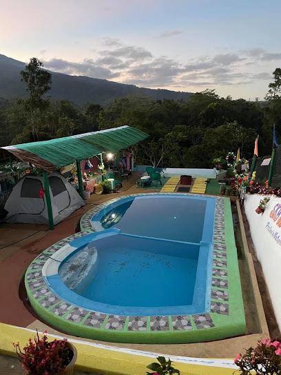
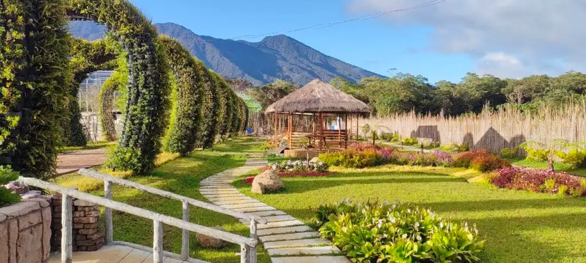
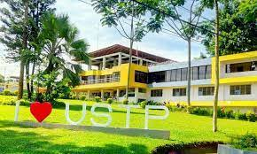

Famous Places in Claveria

"For a unique dining experience, make a stop at Hiraya, a garden restaurant that blends nature and gastronomy. Surrounded by lush greenery, this enchanting eatery offers a serene ambiance and a menu inspired by local ingredients, resulting in flavorful dishes that showcase the essence of Claveria’s cuisine. Indulge in a gastronomic journey as you savor the dishes prepared with passion and creativity. This is a newly built Claveria tourist spots. Located at Brgy. Lanise, Claveria Misamis Orinetal"

VIEW DECK
"Situated on a hilltop, this vantage point offers a panoramic view of the town’s stunning landscape, encompassing the azure waters of the Babuyan Channel and the lush greenery of the surrounding mountains. It’s the perfect spot to witness a magnificent sunrise or sunset, providing a breathtaking backdrop for your Claveria experience. Located at Brgy. Lanise, Claveria Misamis Oriental"

"Cebu Pacific Flight 387 at the site that has now become a major mountain tourism hub in the province, 24 years after one of the worst aviation disasters in the country’s history. Officials laid wreaths and heard mass at the Cebu Pacific Flight 387 shrine built years ago to remember the more than 104 crew and passengers of the ill-fated plane that crashed some 6,000 feet above sea level on the slopes of Mount Sumagaya. Located at Brgy. Aposkahoy, Claveria Misamis Oriental"

Guzmana Avenue
"Is not only a restaurant, It is a majestic place with a great view and has a good food. They offer breakfast, lunch, dinner, snacks, and coffee. Guzmana Avenue’s prime location offers stunning views that add to the overall experience. Make sure to add this list in your Claveria tourist spots adventure!" The tourist attraction like a BALIEM VALLEY INDONESIA. Unwind place, and you can stay overnight, convenient. Pwede mag bonfire para mag bonding to your love once, friends, relatives and family.

"One of the best-kept hideaways in Claveria, Misamis Oriental with a breath-taking overlooking view has just held its formal grand opening yesterday, July 28. Mary Danielle’s Cafe and Resort located in Barangay Lanise also inaugurated its new Palazzo which will cater to special gatherings like birthdays, parties and other events. You can also take a dip in its pool and experience breathtaking scenery at its view deck. The resort also offers overnight stays. For bookings and inquiries, just message them in its Facebook page. Located at Brgy. Lanise, Claveria Misamis Oriental"

The Promise Cafe
"Your countryside friendly Restaurant and Bar and Coffee shop. We are serving the best quality food and drinks with astonishing hillside view. When it comes to satisfying your taste buds, The Promise Cafe offers a delightful culinary experience in Claveria. Known for its warm ambiance and delectable dishes, this cozy cafe serves a variety of local and international cuisine, prepared with fresh and locally sourced ingredients. Whether you’re craving Filipino delicacies or international flavors, The Promise Cafe will surely tantalize your taste buds. Located at Brgy. Man-ibay, Claveria MIsamis Oriental"

"Provides you with full immersion in the outdoors, especially at night when darkness covers all of the surrounding terrains, making it illuminated only by moonlight. There is nothing to fear, however, as the campsite has solar lights and a generator set to last you through nights. And in the morning, you’ll be greeted by the chilly mountain fog, so bring a blanket!
Not just the adult or those nature lovers will enjoy the campsite of Camp Zion but also the kids because they have a playground for your kids to play around. They have a big space for your children to run or to play inside Camp Zion Located at Bgry. Panampawan, Claveria Misamis Oriental"

"A Nature Mountain Resort with Cottages, Green Landscape and Swimming Pool of Cold Clean Fresh Flowing Mineral Water. Janopolan Nature's Spring and Pool is a private swimming pool open to public with its source of water came out and filtered naturally from the mountain.The Janopolan Nature’s Spring and Pool is one of Claveria’s most famous tourist destinations. It provides a relaxing atmosphere for visitors who wanna rest and enjoy a cold swim. There is NO CORKAGE on food and they also have various cooking utensils that everyone can use. Located at Sitio. Janopolan, Claveria Misamis Oriental"

Daru
Head out to Daru for a cozy vibe with a good combination of country side. This unique destination has a cozy vibe paired with the beauty of the countryside. It also has a homey restaurant with a nice wooden aesthetic, a spacious field with bug-type vehicles, an archery range, and more. Daru Country Park & Restaurant is perfect for a simple weekend getaway or an Instagrammable photoshoot higala! They are open every day, from 7:30 am to 8:00 pm. Located at Brgy. Tamboboan, Claveria Misamis Oriental.

The place is nice. Staff are attentive and friendly. If you want to enjoy the place come earlier especially during weekends. It’s packed on weekends during lunch time so better come earlier or visit during week days. Food is good, but could use a little improvement. Their Coffee is good too. located at Brgy. Lanesi, Claveria Misamis Oriental

Apo Vista
Forest Park and Campsite is a destination of nature lovers, a healing place and quick relief of stress. You feel the sweetness of nature, the music of the river’s bubbles, sparkling and trickling. The coldness of ApoVista’s nature gives you a relaxing feeling and happiness to your soul. It feels like swinging at the top of the clouds by experiencing the morning mist of our forest park. Located at Brgy. Aposkahoy, Claveria Misamis Oriental

Sky Nature park
Looking for a place to unwind away from the stressors of life? You might want to consider visiting Sky Nature’s Place in Claveria. This mountain resort will give you the all in one experience of cold weather especially at night, swimming time, no network signal so you’ll take some time off your gadgets and a breath of fresh air. Located at Brgy. Aposkahoy, Claveria Misamis Oriental.

A guest takes a selfie with the majestic Kilobag falls, the biggest of the seven cascading waterfalls which can be found at the 54 hectares Villa Cascada, a nature’s park located in Brgy. Mat-i, Claveria, Misamis Oriental. The new resort, which prides itself with picturesque scenery of the great green plateau from afar enveloped by maze of fogs dropping temperature underneath.

Illuminada
Garden Resort offers a captivating landscape adorned with the majestic Mount Balatukan as its backdrop. Situated across The Haze Kaffe in Sitio Haruhay, Brgy Lunotan, Gingoog City (near the Claveria boundary), Iluminada promises an abundance of picture-perfect moments for unforgettable memories.

University of Science and Technology of southern Philippines(USTP)
is a state university established on August 16, 2016, by virtue of Republic Act 10919 through the amalgamation of the Mindanao University of Science and Technology (MUST) in Cagayan de Oro City, Misamis Oriental and the Misamis Oriental State College of Agriculture and Technology (MOSCAT) in Claveria, Misamis Oriental. It is located in Northern Mindanao, the Gateway to Mindanao, which offers a strategic locational advantage for the institution to train and develop students from all the other regions.